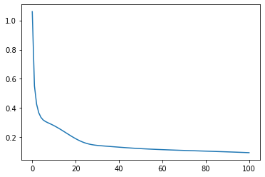
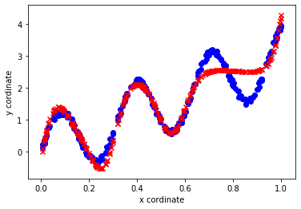

Python 3.7.4 (default, Aug 9 2019, 18:34:13) [MSC v.1915 64 bit (AMD64)]
Type "copyright", "credits" or "license" for more information.
IPython 7.8.0 -- An enhanced Interactive Python.
In [1]: runfile('C:/Users/kaush/Downloads/NN/backPropagation.py', wdir='C:/Users/kaush/Downloads/NN')
This is the mean Squared Error [1.06039443] at epoch 0
This is the mean Squared Error [0.5523023] at epoch 1
This is the mean Squared Error [0.42667395] at epoch 2
This is the mean Squared Error [0.36749927] at epoch 3
This is the mean Squared Error [0.33646227] at epoch 4
This is the mean Squared Error [0.31909026] at epoch 5
This is the mean Squared Error [0.30879679] at epoch 6
This is the mean Squared Error [0.3012804] at epoch 7
This is the mean Squared Error [0.29444015] at epoch 8
This is the mean Squared Error [0.2874181] at epoch 9
This is the mean Squared Error [0.2799192] at epoch 10
This is the mean Squared Error [0.27189082] at epoch 11
This is the mean Squared Error [0.2633827] at epoch 12
This is the mean Squared Error [0.25448611] at epoch 13
This is the mean Squared Error [0.24530766] at epoch 14
This is the mean Squared Error [0.23595893] at epoch 15
This is the mean Squared Error [0.22655325] at epoch 16
This is the mean Squared Error [0.21720572] at epoch 17
This is the mean Squared Error [0.2080343] at epoch 18
This is the mean Squared Error [0.19916032] at epoch 19
This is the mean Squared Error [0.19070742] at epoch 20
This is the mean Squared Error [0.1827975] at epoch 21
This is the mean Squared Error [0.17554348] at epoch 22
This is the mean Squared Error [0.16903923] at epoch 23
This is the mean Squared Error [0.1633481] at epoch 24
This is the mean Squared Error [0.15849302] at epoch 25
This is the mean Squared Error [0.15445096] at epoch 26
This is the mean Squared Error [0.15115443] at epoch 27
This is the mean Squared Error [0.14850039] at epoch 28
This is the mean Squared Error [0.14636466] at epoch 29
This is the mean Squared Error [0.14461845] at epoch 30
This is the mean Squared Error [0.14314281] at epoch 31
This is the mean Squared Error [0.14183851] at epoch 32
This is the mean Squared Error [0.14063041] at epoch 33
This is the mean Squared Error [0.13946712] at epoch 34
This is the mean Squared Error [0.13831759] at epoch 35
This is the mean Squared Error [0.13716646] at epoch 36
This is the mean Squared Error [0.1360092] at epoch 37
This is the mean Squared Error [0.13484801] at epoch 38
This is the mean Squared Error [0.13368868] at epoch 39
This is the mean Squared Error [0.13253833] at epoch 40
This is the mean Squared Error [0.13140406] at epoch 41
This is the mean Squared Error [0.13029211] at epoch 42
This is the mean Squared Error [0.12920752] at epoch 43
This is the mean Squared Error [0.12815402] at epoch 44
This is the mean Squared Error [0.12713414] at epoch 45
This is the mean Squared Error [0.12614929] at epoch 46
This is the mean Squared Error [0.12520001] at epoch 47
This is the mean Squared Error [0.12428609] at epoch 48
This is the mean Squared Error [0.12340681] at epoch 49
This is the mean Squared Error [0.12256101] at epoch 50
This is the mean Squared Error [0.12174726] at epoch 51
This is the mean Squared Error [0.12096394] at epoch 52
This is the mean Squared Error [0.12020933] at epoch 53
This is the mean Squared Error [0.11948163] at epoch 54
This is the mean Squared Error [0.11877907] at epoch 55
This is the mean Squared Error [0.11809988] at epoch 56
This is the mean Squared Error [0.11744234] at epoch 57
This is the mean Squared Error [0.11680478] at epoch 58
This is the mean Squared Error [0.11618564] at epoch 59
This is the mean Squared Error [0.11558338] at epoch 60
This is the mean Squared Error [0.11499659] at epoch 61
This is the mean Squared Error [0.11442391] at epoch 62
This is the mean Squared Error [0.11386405] at epoch 63
This is the mean Squared Error [0.11331582] at epoch 64
This is the mean Squared Error [0.11277808] at epoch 65
This is the mean Squared Error [0.11224977] at epoch 66
This is the mean Squared Error [0.11172988] at epoch 67
This is the mean Squared Error [0.11121745] at epoch 68
This is the mean Squared Error [0.1107116] at epoch 69
This is the mean Squared Error [0.11021149] at epoch 70
This is the mean Squared Error [0.10971631] at epoch 71
This is the mean Squared Error [0.1092253] at epoch 72
This is the mean Squared Error [0.10873774] at epoch 73
This is the mean Squared Error [0.10825296] at epoch 74
This is the mean Squared Error [0.10777029] at epoch 75
This is the mean Squared Error [0.1072891] at epoch 76
This is the mean Squared Error [0.10680881] at epoch 77
This is the mean Squared Error [0.10632882] at epoch 78
This is the mean Squared Error [0.10584858] at epoch 79
This is the mean Squared Error [0.10536754] at epoch 80
This is the mean Squared Error [0.10488519] at epoch 81
This is the mean Squared Error [0.104401] at epoch 82
This is the mean Squared Error [0.10391448] at epoch 83
This is the mean Squared Error [0.10342514] at epoch 84
This is the mean Squared Error [0.10293248] at epoch 85
This is the mean Squared Error [0.10243604] at epoch 86
This is the mean Squared Error [0.10193533] at epoch 87
This is the mean Squared Error [0.1014299] at epoch 88
This is the mean Squared Error [0.10091928] at epoch 89
This is the mean Squared Error [0.10040299] at epoch 90
This is the mean Squared Error [0.09988057] at epoch 91
This is the mean Squared Error [0.09935157] at epoch 92
This is the mean Squared Error [0.09881551] at epoch 93
This is the mean Squared Error [0.09827192] at epoch 94
This is the mean Squared Error [0.09772034] at epoch 95
This is the mean Squared Error [0.09716029] at epoch 96
This is the mean Squared Error [0.09659129] at epoch 97
This is the mean Squared Error [0.09601287] at epoch 98
This is the mean Squared Error [0.09542455] at epoch 99
This is the mean Squared Error [0.09482583] at epoch 100


In [2]: